▲ 단풍이 든 팔공산 골짜기. 올해 축제는 산림청 절정 예상일인 10월 30일에 문을 연다 사진=한국관광공사
올해 팔공산 단풍축제는 10월 30일(금)부터 11월 1일(일)까지, 팔공산 갓바위 시설지구 일원에서 열리는 것으로 일부 자료에 정리돼 있다. 공교롭게도 대구신문이 인용한 산림청 예측에서 팔공산 단풍 절정 예상일도 10월 30일이다. 축제 첫날과 절정 예상일이 겹치는 셈이다. 다만 한 가지는 먼저 밝혀 둔다. 이 글을 쓴 10월 3일 기준으로 대구시·동구청의 2026년 공식 공지는 열람하지 못했고, 한국관광공사 TourAPI 행사 목록(대구, 10월 이후 시작 행사)에도 이 축제는 아직 올라 있지 않았다. 그래서 개최 일정과 장소 자체도 2차 정리 자료에 기댄 것이라 확정 사실로 보지 않는 편이 안전하다. 프로그램·교통통제·셔틀 안내는 더더욱 확인하지 못했다. 축제 일정과 장소는 전국 단풍축제 일정 정리 자료에 근거하고, 프로그램은 2024년 개최 기사를 참고용으로만 소개한다. 자차로 가는 사람 입장에서 갓바위 오르는 길, 주차, 동화사·파계사 단풍 코스, 주말 혼잡 대응을 정리했다.
1. 한눈에 보기 — 일정은 확인, 세부 안내는 미확인
▲ 단풍이 든 팔공산 골짜기(한국관광공사 팔공산국립공원 갓바위지구 사진). 갓바위 시설지구와 능선의 색이 시기마다 다를 수 있다. 사진=한국관광공사
| 항목 | 내용 | 확인 상태 |
|---|---|---|
| 기간 | 10월 30일(금)~11월 1일(일), 3일간 | 전국 단풍축제 일정 정리 자료 기준. 대구시·동구청 공식 공지와 TourAPI 행사 목록(10월 3일 조회)에서는 확인하지 못함 |
| 장소 | 대구 동구 팔공산 갓바위 시설지구 일원(진인동) | 같은 자료 기준 |
| 주최(과거 사례) | 팔공산 갓바위 상가번영회(2024년 제23회 기사 기준) | 2026년 주최·회차는 확인하지 못함 |
| 산림청 단풍 절정 예측 | 팔공산 10월 30일 | 대구신문 보도(산림청 예측지도 인용) |
| 주말 | 10월 31일(토)·11월 1일(일) | 방문객 증가 예상(일반 추정) |
| 프로그램·시간표 | 확인하지 못함 | 방문 전 동구청·상가번영회 공지 확인 |
| 교통통제·셔틀 | 확인하지 못함 | 방문 전 공식 공지 확인 |
| 과거 개최 장소(참고) | 2024년 10월 25~27일 갓바위지구 광장, 주최 팔공산 갓바위 상가번영회, 주제 "소원성취"(국제뉴스 보도) | 2026년 장소가 같다는 보장은 아님 |
| 입장료 | 확인하지 못함 | 단정하지 않음, 공식 공지 확인 |
ℹ️ 일정이 출처마다 다를 수 있다
이 글의 축제 일정(10월 30일~11월 1일)은 2차 정리 자료에서 확인한 것이다. 민간 축제 정보 사이트 리컴에리어(recomarea.com)도 제25회·2026.10.30~11.01·갓바위 시설지구 일원·주최 대구광역시 동구로 게재했지만 2차 자료이며, 동구청(donggu.daegu.kr) 공식 공지는 직접 확인하지 못했다. 일부 정리 자료에는 같은 기간 동화지구 분수대광장(주최 동화지구번영회, 10/30~11/3)도 별도 항목으로 올라 있어 장소가 이원화됐을 수 있다. 같은 축제가 해마다 갓바위 시설지구와 동화 시설지구에서 번갈아 열린다는 설명이 있어, 장소가 바뀌지 않았는지 방문 직전 동구청 공지로 한 번 더 확인하는 편이 안전하다. 참고로 2024년에는 갓바위지구 광장에서 10월 25~27일 열렸다. 대구관광(tour.daegu.go.kr)에도 이 축제 항목은 있으나 2026년 개최 정보까지는 열람하지 못했다.
2. 단풍 절정 시기 — 산림청 예측과 축제일이 겹친다
산림청과 국립수목원은 9월 22일 '2026년 한반도 단풍절정 예측지도'를 발표했다. 전국 단풍나무류는 10월 31일, 은행나무는 10월 30일이 절정일로 제시됐다. 대구신문은 이 예측을 인용해 팔공산 절정을 10월 30일로 전했고, 경북도민일보는 팔공산·주왕산·가야산이 10월 28일부터 11월 초 사이에 가장 짙은 색을 보일 것으로 소개했다. 대구 전체로는 11월 초 절정이라는 보도도 있다. 지점별 예측일과 보도 표현이 조금씩 다르므로 "10월 30일 전후"로 보는 것이 맞다.
| 구분 | 내용 | 비고 |
|---|---|---|
| 팔공산 | 10월 30일 절정 예상 | 대구신문 인용 산림청 예측 |
| 전국 단풍나무류·참나무류 | 10월 31일 | 산림청 예측지도 |
| 전국 은행나무 | 10월 30일 | 산림청 예측지도 |
| 대구·경북 시기 | 10월 하순 시작, 10월 말~11월 초 절정 | 경북도민일보·대구신문 보도 |
| 올해 절정 시기 | 최근 5년 평균보다 약 0.8일 늦음 | 산림청 예측지도 |
| 절정의 정의 | 관측 대상 나무 잎의 약 절반이 물든 시점 | 산 전체가 붉은 날이 아님 |
ℹ️ "절정"이 곧 가장 예쁜 날은 아니다
절정 기준은 잎의 절반가량이 물든 때다. 갓바위 시설지구는 고도가 낮아 능선과 색이 다를 수 있고, 실제 색은 기온과 비에 따라 며칠 어긋날 수 있다. 전국 예측 전반은 산림청 2026 단풍절정 예측지도 정리에서 볼 수 있다.
| 날짜 | 단풍 쪽 신호 | 축제 쪽 | 자차 이동 판단 |
|---|---|---|---|
| 10월 28일(수) | 경북도민일보: 팔공산 가장 짙은 시기의 시작 무렵 | 축제 전 | 행사 혼잡 없이 단풍만 보려면 후보 |
| 10월 30일(금) | 산림청 예측 팔공산 절정, 전국 은행나무 절정 | 개막일 | 절정과 개막이 겹침. 평일이라 주말보다는 낫다고 보는 것이 일반적 추정 |
| 10월 31일(토) | 전국 단풍나무류 절정 예측일 | 축제 중 | 단풍·축제·주말이 모두 겹쳐 가장 붐빌 가능성(추정) |
| 11월 1일(일) | 절정 직후 며칠 | 폐막일 | 오전 도착, 오후 귀가 정체 대비(추정) |
| 11월 첫째 주 이후 | 대구 전체 절정은 11월 초라는 보도 | 축제 종료 | 축제 인파를 피하면서 단풍을 볼 여지 |
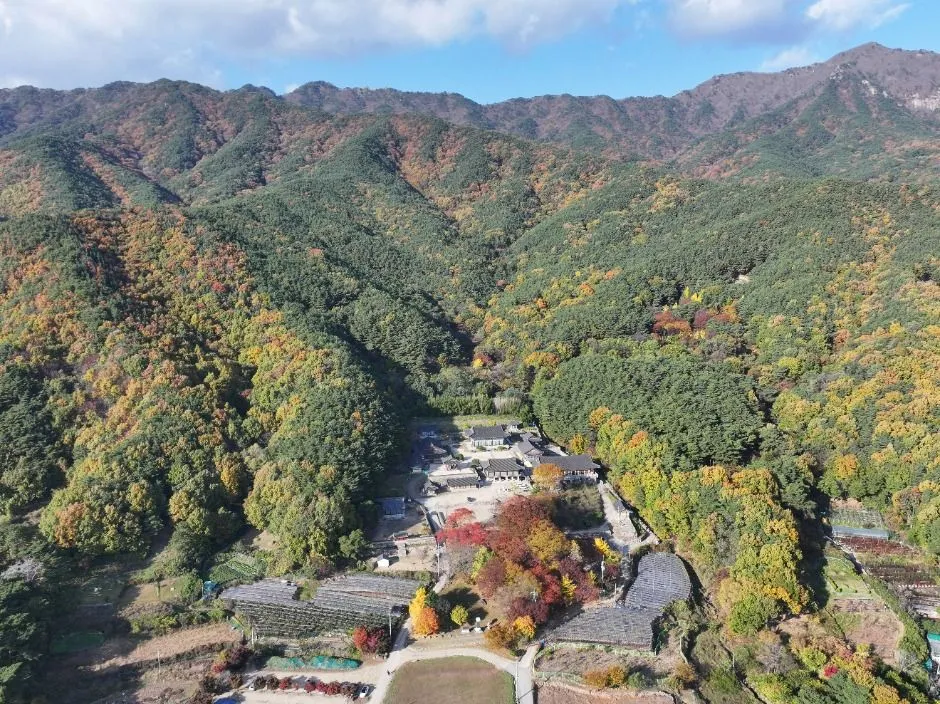
▲ 단풍이 든 팔공산 골짜기(부인사 일대 항공 사진). 촬영 연도는 확인되지 않았고 올해 색감과는 다를 수 있다. 사진=한국관광공사
산림청 원문 공지는 아래에서 확인할 수 있다. 산림청 보도자료 바로가기
3. 축제 프로그램 — 무엇이 확인되고 무엇이 안 되나
2026년 세부 프로그램은 확인하지 못했다. 참고할 만한 것은 2024년 제23회 행사다. 당시 데일리대구경북뉴스 보도에 따르면 팔공산이 국립공원으로 승격된 뒤 갓바위지구에서 열린 첫 행사였고, 주제는 "소원성취"였다. 갓바위소원길 걷기여행, 소원순두부 나눔, 갓바위가요제, 축하공연이 열렸다. 올해도 같은 구성일 것이라고 단정할 수는 없다.
| 프로그램 | 2024년 보도 내용 | 2026 확인 여부 |
|---|---|---|
| 갓바위소원길 걷기여행 | 걷기 프로그램으로 진행 | 확인하지 못함 |
| 소원순두부 나눔 | 먹거리 나눔 행사 | 확인하지 못함 |
| 갓바위가요제 | 가요제 | 확인하지 못함 |
| 축하공연 | 축하공연 | 확인하지 못함 |
| 2021년 사례 | 코로나 영향으로 SNS 온라인 축제로 진행(사진 공모·초성퀴즈 등) | 참고용 |
과거 축제의 안내 채널은 갓바위지구 누리집과 SNS였다. 갓바위지구 누리집 바로가기
4. 갓바위 오르기 — 두 갈래 코스와 단풍철 요령
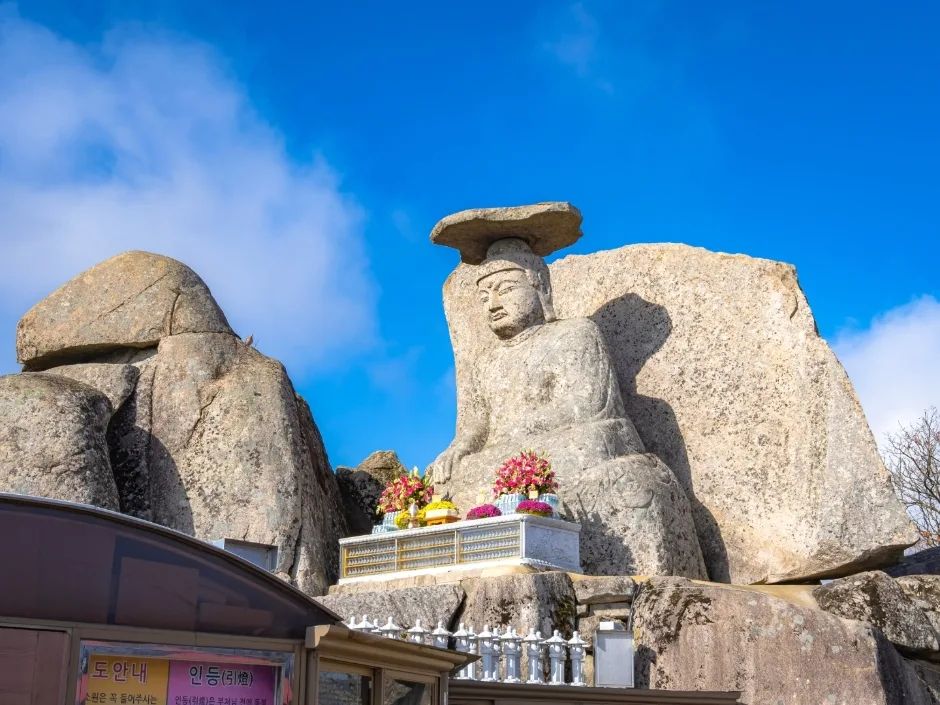
▲ 머리 위에 넓적한 돌을 얹은 관봉 석조여래좌상, 일명 갓바위. 보물 제431호다. 사진=한국관광공사
갓바위(관봉 석조여래좌상)는 해발 850m 관봉 정상에 있고 대구 동구와 경산시 와촌면 경계에 걸쳐 있다. 그래서 오르는 길이 크게 두 갈래다. 기존 기사에서 정리한 대로 대구 동구 진인동 갓바위 집단시설지구에서 오르면 약 1시간, 경산 와촌 쪽 선본사 코스는 약 30분이 걸린다. 축제장이 있는 쪽은 대구 동구 시설지구이므로 축제와 갓바위를 함께 보려면 이 코스가 동선상 자연스럽다.
| 구분 | 대구 동구 시설지구(진인동) | 경산 와촌 쪽(선본사) |
|---|---|---|
| 오르는 시간 | 약 1시간(기존 기사 기준) | 약 30분(기존 기사 기준) |
| 축제 연계 | 축제장 인접, 행사 구간과 겹칠 수 있음 | 축제장과는 거리가 있음 |
| 주차 | 갓바위 집단시설지구 약 542대(역사문화대전, 2017년 기준) | TourAPI 갓바위지구(와촌면 갓바위로10길 5-1): 주차 가능(무료) |
| 내비 검색어 | "팔공산 갓바위 집단시설지구" 또는 "갓바위주차장" | "팔공산국립공원 갓바위지구"(경산 와촌면 갓바위로10길 5-1) |
| 문의 | 집단시설지구 053-980-0303(역사문화대전 기재) | 팔공산국립공원동부사무소 053-989-8300 |
| 운영·통제 | 기상에 따라 출입통제 가능(국립공원 안내) | 연중무휴, 기상 여건에 따라 출입통제 |
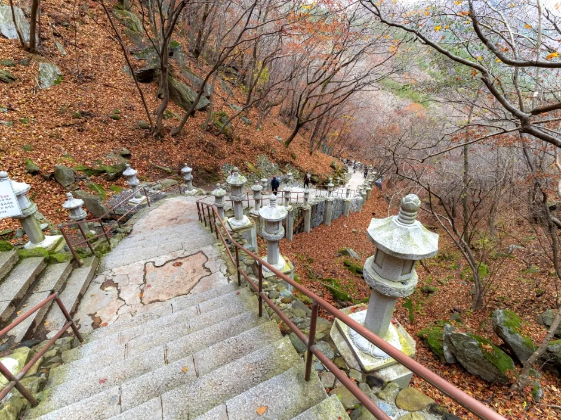
▲ 갓바위지구의 돌계단 탐방로. 가을철에는 계단 폭이 좁은 구간에서 오르내리는 사람이 겹칠 수 있다. 사진=한국관광공사
갓바위 부근에서는 소원을 빌러 오는 참배객이 많아 계단길이 붐빌 수 있다. 축제 기간에는 단풍 관광객까지 더해지므로 오르내리는 시간이 평소보다 길어질 수 있다. 하산 시간은 일몰 전 기준으로 잡고, 해가 짧은 11월 초에는 이른 시간에 출발하는 쪽이 낫다. 가을철 산불예방 입산통제 가능성은 입산통제와 단풍철 정리 기사를 참고하자.
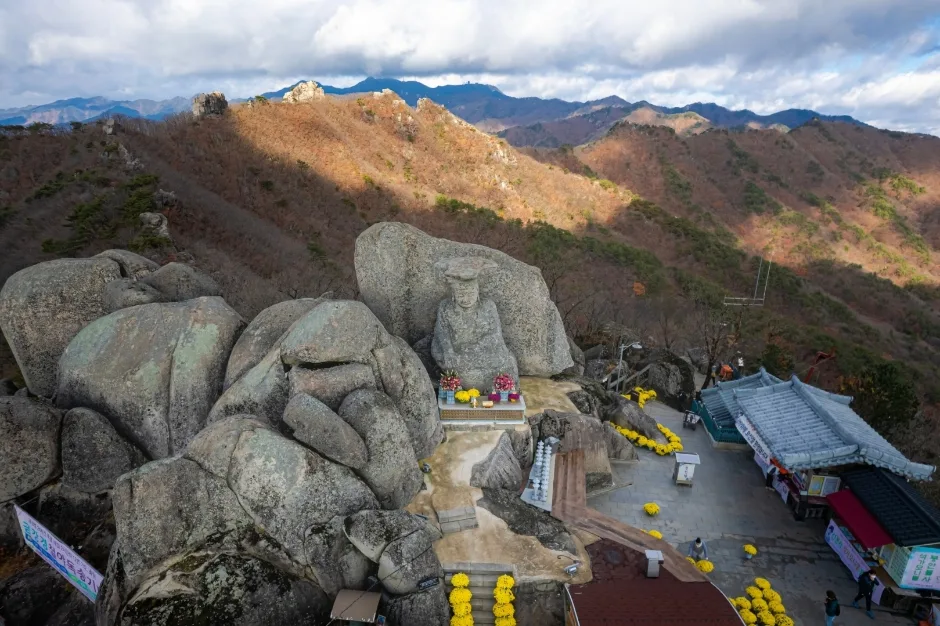
▲ 관봉 정상부 바위와 아래 참배 공간을 내려다본 모습. 정상부는 바람이 강하고 쌀쌀할 수 있다. 사진=한국관광공사
5. 자차 접근 — 내비, 주차, 셔틀 확인 상태
갓바위 시설지구에는 상가와 주차장이 모여 있고, 대구 시내버스가 들어오는 종점 역할도 한다. 역사문화대전 기재 기준(2017년)으로 주차 약 542대, 시내버스 401번·팔공2·팔공3번이 다닌다. 다만 단풍철 주말에는 이 수용량으로 부족할 수 있고, 축제 기간 임시주차장이나 통제 구간은 확인하지 못했다.
| 항목 | 내용 | 확인 상태 |
|---|---|---|
| 목적지 | 갓바위 집단시설지구(대구 동구 진인동) | 내비에서 "갓바위 집단시설지구"로 검색 |
| 주차 수용 | 약 542대 | 2017년 기준 자료, 현재 수치 미확인 |
| 주차 요금 | 갓바위 공영주차장 1,000원(다자녀 500원), 파계사지구 국립공원 주차장 무료(TourAPI) | 갓바위 요금은 기존 기사 기준, 축제 기간 변경 여부는 확인하지 못함 |
| 축제 기간 임시주차장 | 확인하지 못함 | 공식 공지 확인 |
| 교통통제 구간 | 확인하지 못함 | 공식 공지 확인 |
| 시내버스 | 갓바위 401번, 동화사 급행1번·팔공1번, 파계사 101번·101-1번, 성수기 주말·공휴일 맞춤형 팔공2·3번 | 2025년 10월 31일자 보도 기준, 2026 노선·배차 미확인 |
| 단풍철 증회(2025년 사례) | 11월 1~2일, 8~9일 급행1번 20대에서 22대로 증차, 토·일 운행 162회에서 190회, 배차 13분에서 10~11분 | 2025년 사례, 2026 증회 여부는 확인하지 못함 |
| DRT(수요응답형 셔틀) | 2024년 10월 26일 운행 시작: 동대구역·아양교역↔갓바위 주차장, 동대구역·아양교역↔동화사 공영주차장, 파계삼거리↔동화사 공영주차장 등. 주말·공휴일 08:00~17:30 | 2024년 개시 기사 기준. 2026년 단풍철 운행 여부·노선·시간은 확인하지 못함 |
| 동대구역~갓바위 | 401번 시내버스 약 1시간(기존 기사 기준) | 교통 상황에 따라 달라짐 |
단풍철 대중교통 증회는 2025년에도 있었다. 대구시는 11월 첫째·둘째 주 토·일요일(1~2일, 8~9일) 동대구역~동화사 구간 급행1번을 늘렸다. 2026년에도 비슷한 대책이 나올 가능성은 있지만 공지가 나온 것은 확인하지 못했다.
DRT는 2024년 대구시가 팔공산 단풍철과 봄 벚꽃철에 맞춰 도입했고, 당시 보도에는 운행 기간이 2024년 10월 26일부터 연말까지로 나온다. 일부 보도에는 "내년 연말까지"라는 표현도 있다. 2026년 단풍철에도 운행하는지는 확인하지 못했으므로, 운행한다고 가정하고 일정을 짜지 않는 편이 낫다.
| 목적지 | 대중교통 | 자차 |
|---|---|---|
| 갓바위 시설지구 | 동대구역에서 401번 약 1시간(기존 기사 기준) | 내비 "갓바위 집단시설지구", 주차 약 542대(2017년 자료) |
| 동화사·케이블카 | 동대구역에서 급행1번 또는 팔공1번 | 대구 도심에서 차로 30~40분(기존 기사 기준), 케이블카 주차장 무료 |
| 파계사 | 101번·101-1번 | 내비 "대구 동구 파계로 741", 파계사지구 주차 무료 |
| 혼잡기 대안 | 주말·공휴일 DRT(2024년 기준, 2026 미확인) | 오전 일찍 도착, 만차 시 동화사 쪽으로 방향 전환 |
✅ 자차 이동자 요령
· 축제 첫날 10월 30일(금)은 절정 예상일이라 주말 못지않게 붐빌 가능성이 있다(추정)
· 주차장은 갓바위 시설지구 안이 가장 가깝지만 만차 가능성이 있으므로, 대체 주차장과 셔틀 운행 여부를 미리 확인한다
· 대구 시내에서 접근할 때는 팔공산 방향 정체가 길어질 수 있으니 시간 여유를 둔다
· 주차 요금과 임시주차장 위치는 공식 공지에서 확인한다
6. 동화사·파계사 — 단풍 코스로 묶는 법
갓바위 외에 팔공산에는 사찰 단풍 코스가 이어진다. TourAPI에 등록된 곳은 동화사(대구 동구 동화사1길 1), 파계사(대구 동구 파계로 741), 팔공산국립공원 동화사지구와 파계사지구다. 아래 사진은 한국관광공사가 보유한 것으로 대부분 단풍철이 아닌 시기에 찍은 사진이므로 현장 색감과는 다를 수 있다.
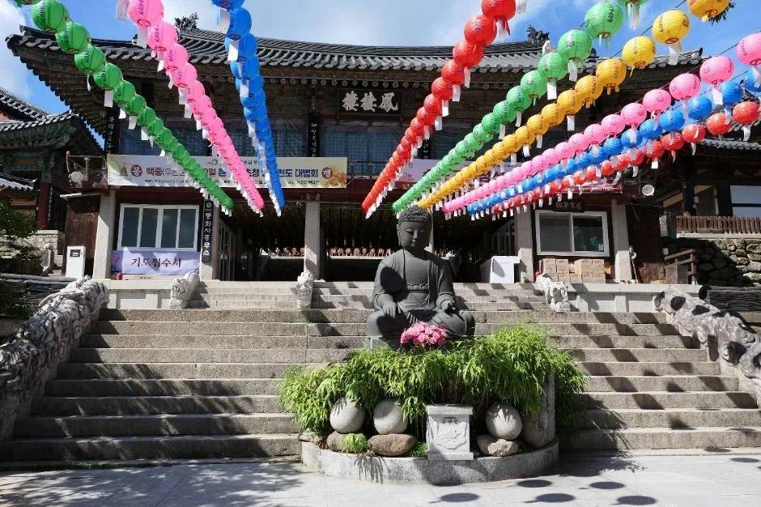
▲ 동화사 경내. 사진은 연등이 걸린 시기의 모습이다. 사진=한국관광공사
| 구분 | 동화사 | 파계사 |
|---|---|---|
| 주소(내비) | 대구 동구 동화사1길 1 | 대구 동구 파계로 741 |
| 문의 | 053-980-7900 | 053-984-4550 |
| 이용 시간 | 상시 개방 | 04:00~17:00 |
| 휴무 | 연중무휴 | 연중무휴 |
| 주차 | 가능(요금 미확인) | 파계사지구 국립공원 주차장 가능, 무료(TourAPI) |
| 특징 | 템플스테이 운영, 통일약사여래대불 | 숲길과 계곡 인접, 파계사지구 탐방로 |
| 갓바위 시설지구에서 | 차로 약 20분(기존 기사 기준) | 소요 시간 미확인 |
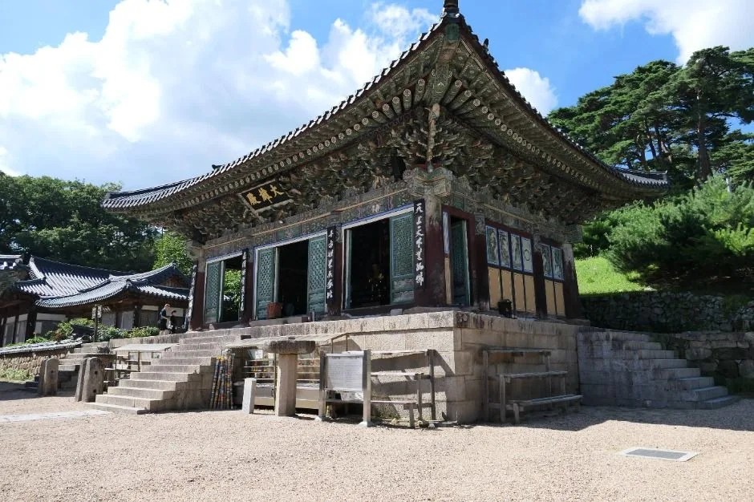
▲ 동화사 경내의 전각. 사진은 단풍철이 아닌 시기에 촬영됐다. 사진=한국관광공사
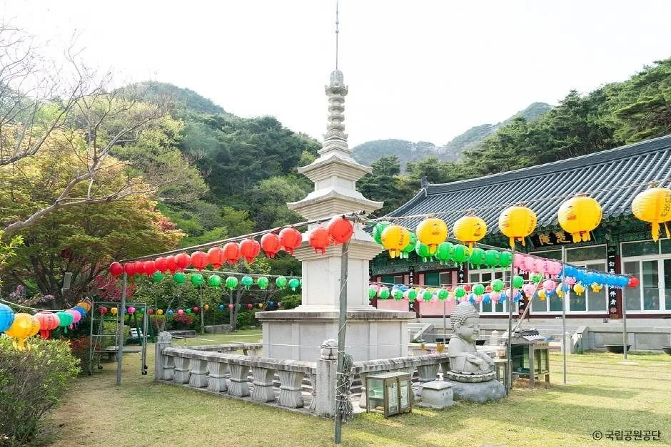
▲ 파계사 경내. 사진은 연등이 걸린 시기이며 단풍철과는 다르다. 사진=한국관광공사
동화사는 통일약사여래대불과 함께 보는 코스로 반나절이 걸리고, 파계사는 시설지구와 달리 비교적 조용하게 숲길과 계곡을 걷기 좋은 쪽이다. 동화사·갓바위·케이블카 상세 요금과 운영 정보는 기존 기사 팔공산 케이블카·갓바위·동화사 가이드에 정리했으므로 중복해서 다루지 않는다.
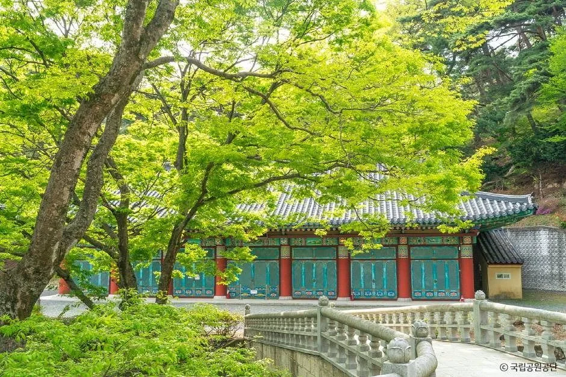
▲ 파계사 경내 돌다리와 전각. 신록 시기에 찍은 사진이다. 사진=한국관광공사
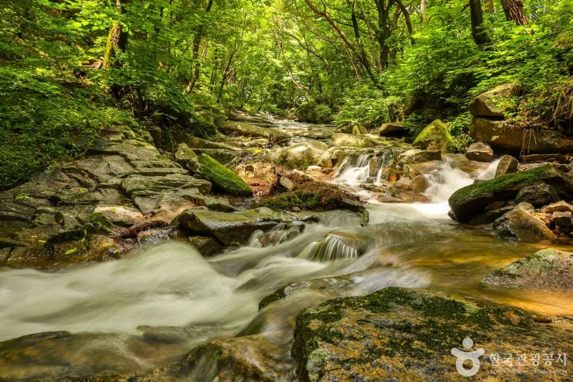
▲ 파계사지구 계곡. 사진은 물이 흐르는 시기의 모습이다. 사진=한국관광공사
TourAPI에 가을 사진이 있는 인근 코스
동화사·파계사 말고도 팔공산 자락에는 한국관광공사가 가을 사진을 올려 둔 곳이 몇 군데 있다. 아래 사진은 모두 단풍철 현황이 아니라 과거 촬영분이다. 올해 색감은 방문 직전 확인해야 한다.
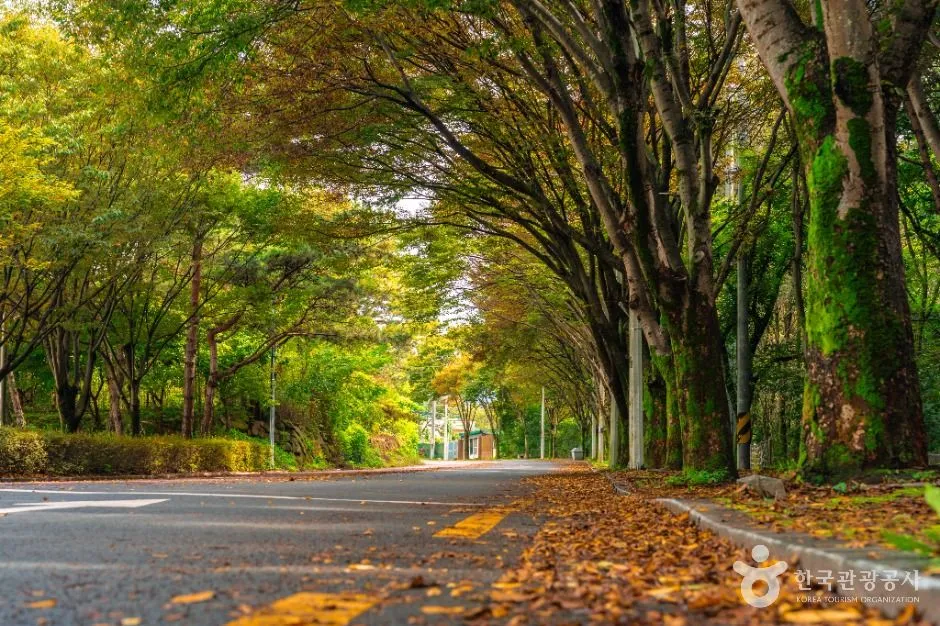
▲ 대구올레 팔공산 1코스 북지장사 가는 길의 늦가을 도로. 노란 낙엽이 길을 덮은 과거 촬영 사진이다. 사진=한국관광공사
| 장소 | 주소(내비) | 이용 시간·문의 | 비고 |
|---|---|---|---|
| 북지장사 | 대구 동구 도장길 243(도학동) | 연중무휴, 053-985-5217 | 주차 가능, 대구올레 팔공산 1코스 구간 |
| 부인사 | 대구 동구 팔공산로 967-28(신무동) | 연중무휴, 053-982-5006 | 주차 가능 |
| 신숭겸장군유적 | 대구 동구 신숭겸길 17(지묘동) | 10:00~17:00, 053-981-6407 | 대구올레 팔공산 2코스 |
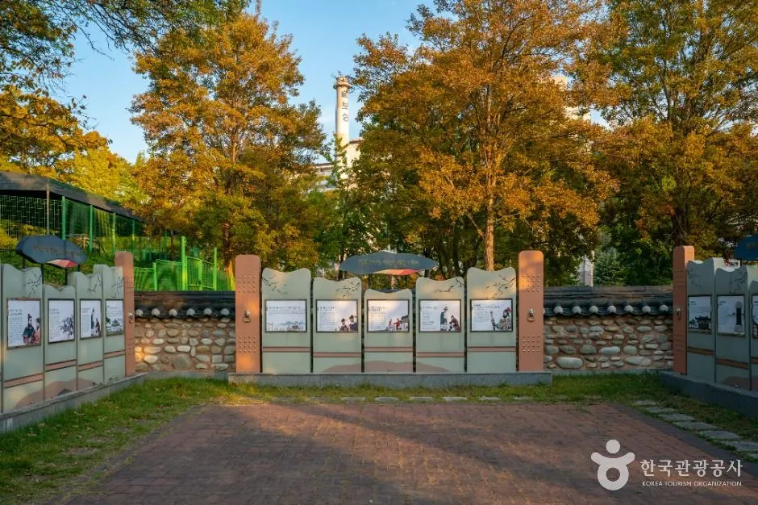
▲ 신숭겸장군유적 일대의 가을 풍경. 촬영 연도는 확인되지 않은 사진이다. 사진=한국관광공사
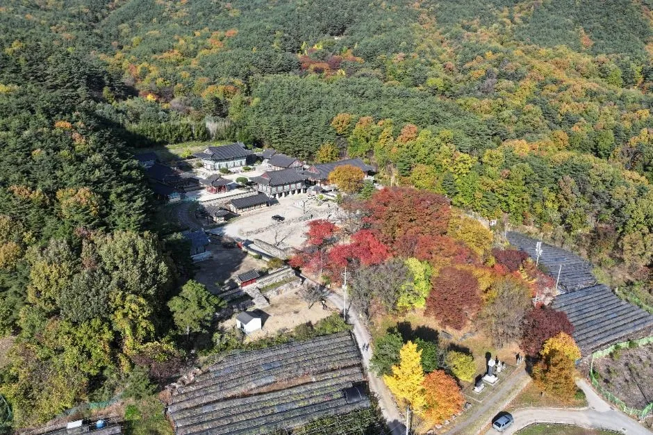
▲ 부인사 일대를 내려다본 가을 항공 사진. 한국관광공사 Type3 사진이라 크롭 없이 줄여 실었다. 사진=한국관광공사
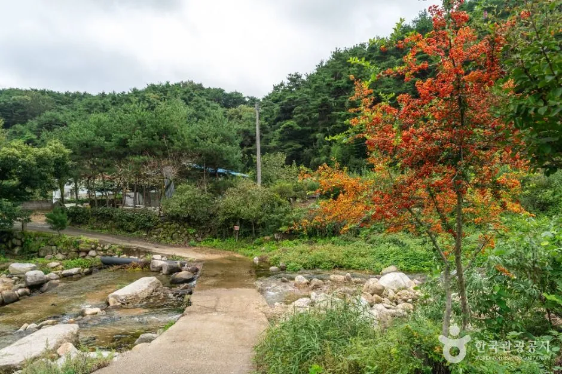
▲ 대구올레 팔공산 3코스(부인사 도보길) 소개 사진 중 붉은 단풍이 든 개울가. 촬영 시기는 확인되지 않았다. 사진=한국관광공사
7. 케이블카·순환도로 — 갓바위 말고 선택지
팔공산 케이블카(대구 동구 팔공산로185길 51)는 TourAPI에도 등록돼 있다. 단풍철 케이블카 대기 시간과 축제 기간 운영 변경은 확인하지 못했다. 요금·운영시간·주차는 기존 기사에서 다뤘다. 갓바위 시설지구가 막히면 케이블카나 동화사 쪽으로 방향을 바꾸는 방법이 있지만, 어느 쪽이든 단풍철 주말에는 몰릴 수 있다. 혼잡 시간대를 피하는 것이 핵심이다.
| 방법 | 소요시간 | 도착 지점 | 비용·주차 |
|---|---|---|---|
| 팔공산 케이블카 | 편도 약 7분(선로 1.2km, 표고차 350m) | 신림봉 인근 해발 약 820m. 갓바위가 아니라 동화사지구 위 능선 | 대인 왕복 14,000원·편도 11,000원, 제1·2주차장 무료, 09:30 운행 시작 |
| 갓바위 도보(대구 동구 쪽) | 약 1시간 | 관봉 석조여래좌상(해발 850m) | 갓바위 공영주차장 1,000원 |
| 갓바위 도보(경산 선본사 쪽) | 약 30분 | 관봉 석조여래좌상 | 갓바위지구 와촌면 주차장 무료(TourAPI) |
두 가지는 목적이 다르다. 케이블카는 능선 조망, 도보는 갓바위 참배가 목적이다. 케이블카 정상에서 갓바위까지 걸리는 시간은 확인하지 못했으므로 하루에 둘 다 하려면 구간별로 따로 시간을 잡는 편이 안전하다. 요금과 운영시간은 바뀔 수 있어 방문 전 전화(053-982-8801~3)로 확인하자.
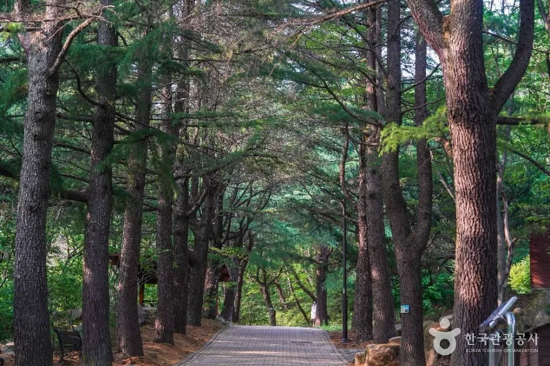
▲ 팔공산국립공원 동화사지구의 소나무 숲길. 사진은 단풍철이 아닌 시기다. 사진=한국관광공사
8. 주말 혼잡 대응 — 언제 가는 게 낫나
혼잡 시간대에 대한 공식 통계나 안내는 확인하지 못했다. 아래는 일반적인 단풍철 패턴에 근거한 추정이며 공식 발표가 아니다. 고속도로 단풍철 정체 시간대는 단풍철 고속도로 시간대 분석을, 10월 말 일정은 10월 연휴 단풍 타이밍을 함께 참고할 만하다.
| 날짜 | 특징 | 권장 |
|---|---|---|
| 10월 30일(금) | 축제 첫날이자 산림청 절정 예상일, 평일이라 주말보다는 한산할 수 있음(추정) | 시간 여유가 있다면 현실적인 선택 |
| 10월 31일(토) | 주말, 방문객 집중 예상 | 오전 일찍 도착, 시설지구 주차가 안 되면 대체 수단 검토 |
| 11월 1일(일) | 폐막일, 오후 귀가 정체 가능(추정) | 이른 오전 도착, 일몰 전 하산 |
| 11월 초 이후 | 대구 전체 절정은 11월 초라는 보도 있음 | 축제 이후에도 단풍 구경 가능 |
✅ 혼잡 피하는 요령(추정)
· 오전 일찍 도착하면 주차 여유가 있을 가능성이 높다
· 점심 직후 갓바위 오르는 시간대는 계단길이 붐빌 수 있다
· 귀가는 일몰 전후 정체가 길어질 수 있으니 여유 있게 출발한다
· 방문 2~3일 전 실제 단풍 현황과 일기예보를 확인한다. 절정 예측이 어떻게 만들어지는지는 단풍 절정 시기 계산법 기사에서 볼 수 있다
9. 출발 전 체크리스트
| 확인 항목 | 현재 상태 | 어디서 확인 |
|---|---|---|
| 축제 일정·장소 | 10월 30일~11월 1일, 갓바위 시설지구(2차 정리 자료, 공식 미확인) | 대구 동구청, 갓바위지구 상가번영회 |
| 프로그램 시간표 | 확인하지 못함 | 동구청 공지, 갓바위지구 SNS |
| 교통통제·임시주차장 | 확인하지 못함 | 동구청 공지 |
| 개최 여부 공식 확인 | TourAPI 행사 목록·검색에서 2026 공식 공지 미확인 | 대구관광(tour.daegu.go.kr), 동구청 누리집 |
| DRT 운행 | 2024년 시작, 2026 미확인 | 대구시 교통 공지 |
| 단풍 현황 | 산림청 절정 예상 10/30 | 산림청, 방문 2~3일 전 현황 |
| 입산통제 | 기상·산불 상황에 따라 변동 | 국립공원 동부사무소 053-989-8300 |
10. 요약
팔공산 단풍축제는 10월 30일~11월 1일 갓바위 시설지구 일원에서 열리는 것으로 정리돼 있고, 산림청 예측상 팔공산 단풍 절정 예상일(10월 30일)과 겹친다. 다만 이 일정은 2차 정리 자료 기준이며, 한국관광공사 TourAPI 행사 목록에도 아직 없고 대구시·동구청의 2026년 공식 공지, 프로그램, 교통통제도 확인하지 못했다.
자차 방문객은 갓바위 시설지구 주차(2017년 기준 약 542대)가 단풍철 주말에는 부족할 수 있다는 점을 염두에 두고 일찍 출발하는 편이 낫다. 갓바위 오르기는 대구 쪽 약 1시간, 경산 쪽 약 30분이다. 동화사(상시 개방)와 파계사(04:00~17:00)는 TourAPI 기준이며, 축제 기간 임시주차장, DRT 2026 운행, 혼잡 시간대는 확인하지 못했다. 2025년에는 11월 첫째·둘째 주말 급행1번이 증차됐다. 방문 직전 공식 공지를 확인하자.